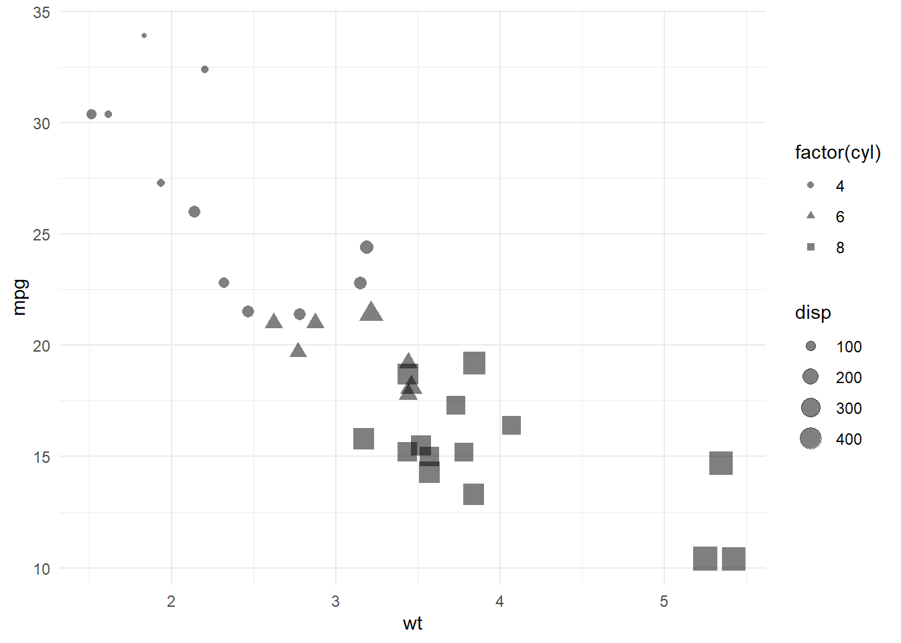

Graficando
Scatter plots
Con tres (3) variables cuantitivas
Agregaremos una linea de ajuste usando el modelo lineal general + los respectibos intervalos de confianza de las bandas.
library(ggplot2)
ggplot(mtcars, aes(wt, mpg, color = disp)) +
geom_point() +
geom_smooth(method = 'lm')+
theme_minimal()+
labs(x = 'Weight', y= 'Miles/(US) gallon')## `geom_smooth()` using formula 'y ~ x'
¿La relación entre x e y es igual entre los distintos sujetos en estudio? ¿qué sucede al tomar en cuenta otra varible, por ejemplo, cualitativa?
Veamos
ggplot(diamonds, aes(carat, price, color = clarity)) +
geom_point(alpha = 0.3) +
geom_smooth()+
theme_minimal()## `geom_smooth()` using method = 'gam' and formula 'y ~ s(x, bs = "cs")'
Graficando cuatro (4) variables en un mismo plot
Se puede controlar el tamaño del punto ploteado, el color y el relleno de acuerdo a los valores que tomen ciertas variables
ggplot(mtcars, aes(wt, mpg, size = disp, color = disp)) +
geom_point() +
theme_minimal()
labs(x = 'Weight', y= 'Miles/(US) gallon')## $x
## [1] "Weight"
##
## $y
## [1] "Miles/(US) gallon"
##
## attr(,"class")
## [1] "labels"En ocasiones cuando una o las dos variables a graficar son categóricas,podemos presenciar overplotting, causando que no dimensionemos claramente el fenómeno estudiado. Para resolver lo anterior, podemos introducir un pequeño ruido en la representación de los puntos y aplicar un alpha (valor que regula la transparencia de los markers) y así lograr ver mejor la relación entre las variables.
Veamos sin jitter ni alpha
ggplot (mtcars,
aes((cyl), mpg),color = as.factor(am)) +
geom_point()+
theme_minimal() Notemos que aunque
Notemos que aunque cyl es una variable discreta, R le da un tratamiento continuo y por eso vemos espacios entre 4 y 5 o 6 y 8, lo cual no tiene sentido. Reparemos esto, además de agregar jitter y opacidad a los puntos.
Con jitter y alpha = 0.2
ggplot (mtcars,aes(as.factor(cyl), mpg),color = as.factor(am)) +
geom_point(alpha = 0.2,position = position_jitter(width = 0.1))+
theme_minimal()
Podemos usar una variable cuantitativa como size y así enriquecer nuestro gráfico, además que la forma cambie de acuerdo al valor de una variable (discreta)
ggplot(mtcars, aes(wt,mpg, size = disp, shape = factor(cyl))) +
geom_point(alpha= 0.5)+
theme_minimal()
#Gráficos de barras
Apilados con paleta de colores definida
# palette <- c(automatic = '#357EB8', manual = '#E41A1C')
# ggplot(mtcars, aes(as.factor(cyl), fill = fam)) +
# geom_bar() +
# labs(x= 'Number of cylinders') +
# scale_fill_manual("Transmission", values = palette)Copyright © 2020 Raúl Galíndez, Inc. All rights reserved.